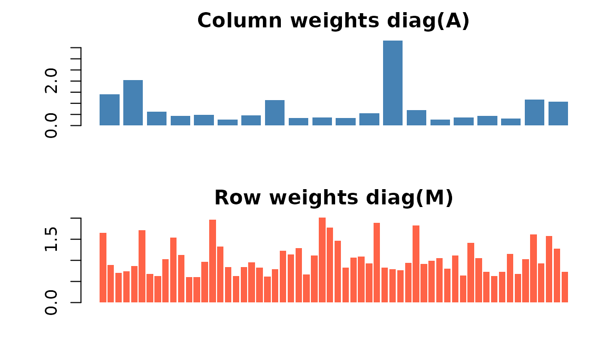
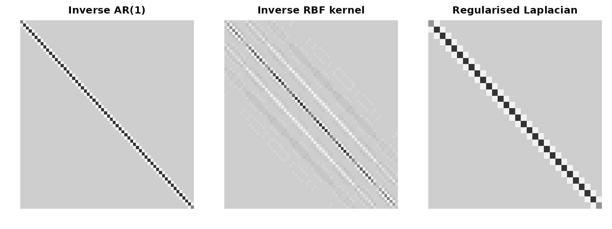
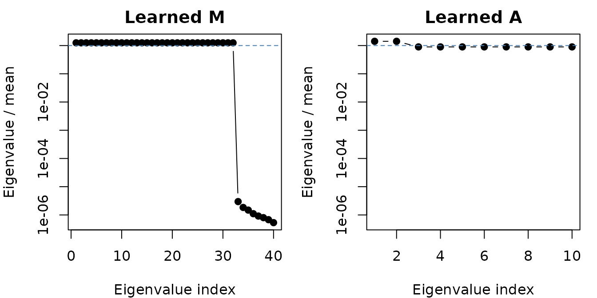

This vignette collects practical recipes for row and column metrics,
plus notes on SPD remedies and the experimental gpca_mle()
learner.
Why metrics
Metrics encode weighting and correlation. The row metric
M changes how observations are compared. The column metric
A changes how variables are compared. Both must be
symmetric positive definite (SPD) for GPCA. In return, you can bake
known structure – temporal smoothness, spatial proximity, group
membership, heteroscedastic noise – straight into the decomposition.
Heteroscedastic diagonals
The simplest non-trivial metric is a diagonal that down-weights noisy rows or columns:
set.seed(42)
n <- 60; p <- 20
X <- matrix(rnorm(n * p), n, p)
col_noise_sd <- runif(p, 0.5, 2)
A <- Diagonal(x = 1 / col_noise_sd^2)
row_noise_sd <- runif(n, 0.7, 1.3)
M <- Diagonal(x = 1 / row_noise_sd^2)
fit <- genpca(X, M = M, A = A, ncomp = 3,
preproc = multivarious::center())
fit$sdev
#> [1] 14.69818 11.24551 10.96887
Inverse-variance weights on columns (top) and rows (bottom). Noisier dimensions get smaller weights.
Recipes
These three patterns – AR(1) smoothing, spatial RBF kernel, graph Laplacian – cover most structured-noise applications.
Graph Laplacian
W <- bandSparse(30, k = c(-1, 0, 1),
diagonals = list(rep(0.2, 29),
rep(1, 30),
rep(0.2, 29)))
D <- Diagonal(x = rowSums(W))
A_lap <- (D - W) + 1e-2 * Diagonal(nrow(W))
Three structured metrics. Off-diagonal banding is what couples nearby rows or variables – it tells GPCA ‘treat these dimensions as related, not independent’.
Learning metrics with gpca_mle()
When you suspect structured noise but lack good priors,
gpca_mle() learns SPD metrics by alternating GPCA with
matrix-normal maximum likelihood:
set.seed(1)
n_m <- 40; p_m <- 10
X_mle <- matrix(rnorm(n_m * p_m), n_m, p_m)
fit_mle <- gpca_mle(X_mle, ncomp = 2, max_iter = 6,
lambda = 1e-3, scale_fix = "trace",
method = "eigen", verbose = FALSE)
range(diag(as.matrix(fit_mle$M)))
#> [1] 289.4551 459.8213
range(diag(as.matrix(fit_mle$A)))
#> [1] 8.230071 69.330188
Learned row metric M (left) and column metric A (right) on i.i.d. Gaussian data. With identity-noise input the learner stays close to identity, with mild row- and column-specific damping.
Keep lambda non-zero, start with a small
ncomp, and watch warnings – they signal a metric was
repaired during the iteration.
SPD remedies in practice
-
constraints_remedy = "ridge"(default) adds a diagonal jitter to keep metrics SPD. -
"clip"truncates tiny negative eigenvalues;"identity"falls back to identity if a metric misbehaves. - Scale metrics before use (e.g., divide by mean diagonal) to avoid ill-conditioning.
- After fitting, check
range(eigen(A)$values)on small problems to verify conditioning.
Where next
See vignette("gpca-scale") for backend choices, sparse
workflows, and covariance-only GPCA.